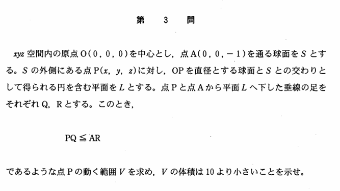

2002年 第3問
空間図形

分析
この年のセットの中では考えづらい方の問題と言える。空間図形は適切な平面で切って平面図形に直して考えるという定石に従うことによってかなり見通しが良くなる。
適切な論証のもと切断して、直線を式で表して、2つの距離を表して、不等式を整理して、図示して、体積を計算して、それを評価するという、工程が多く、様々な力を問うことができる良い問題である。
さらに、解法も切断した後もベクトルを用いる、束を用いる、相似を用いる、中点が正領域か負領域かを用いるといった様々な解法があり、さらに切断をしない場合も、正射影を用いたり、2線分が平行であることを用いて成分表示を求めたり、束の考え方と点と平面との距離の公式を使ったりして解くことは可能なのである。
定石通り対称性を基に切断するのがやはり楽である。が、切断する発想が思い浮かばなかった場合も、別の体系化された解法で解くことが可能である。このことからも、数学的な思考力が十分に問える問題であると言える。